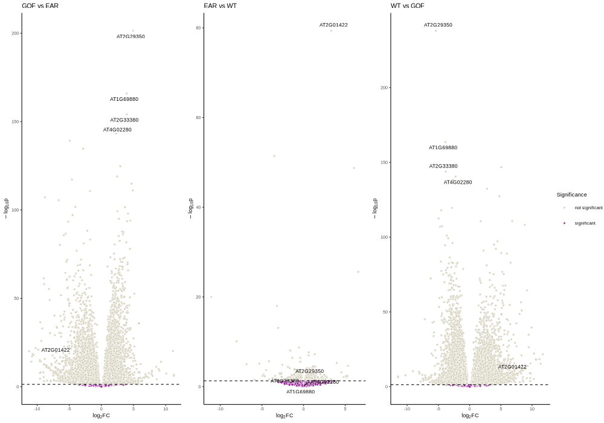
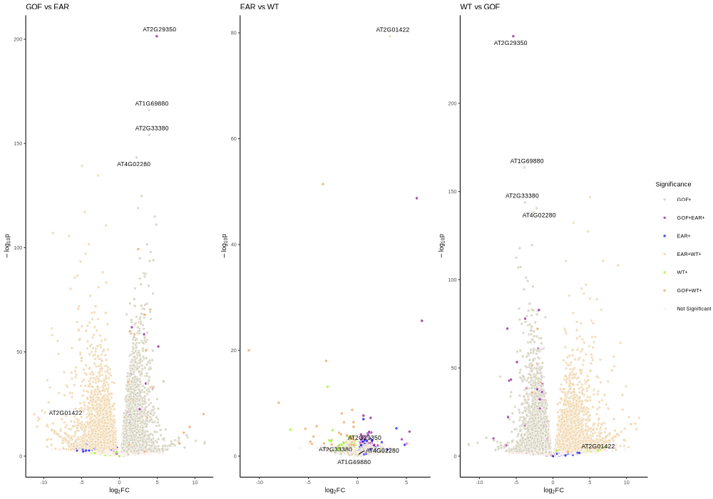
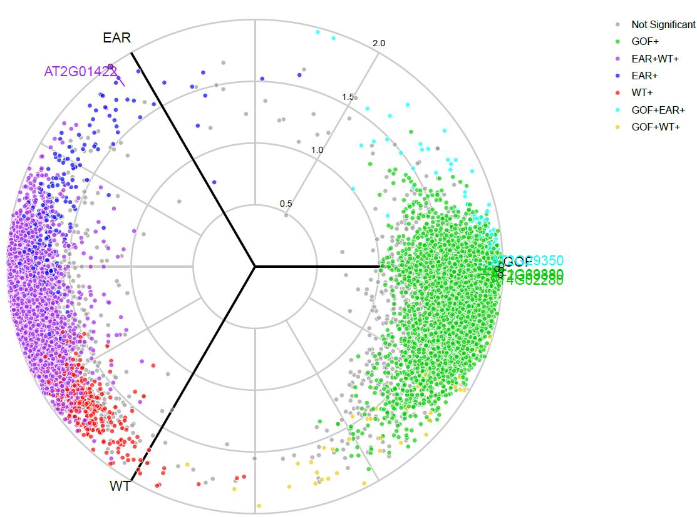
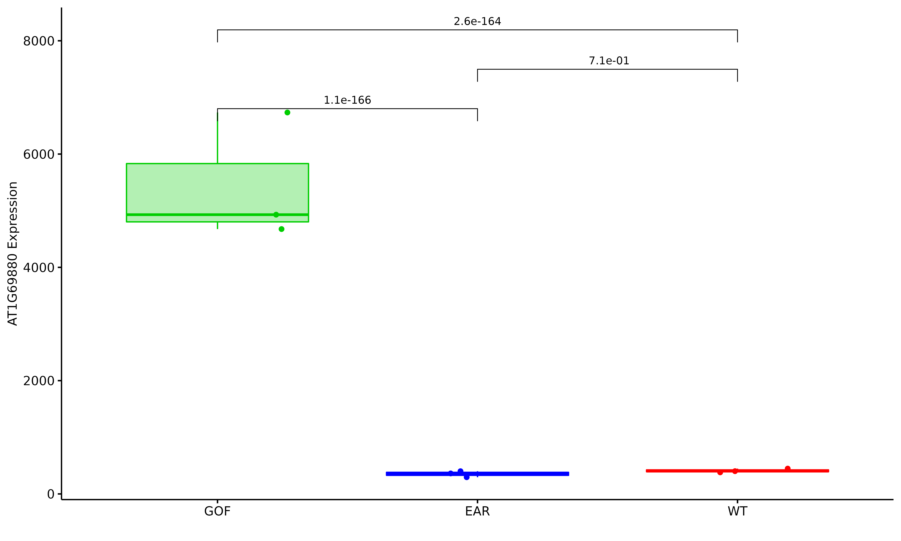
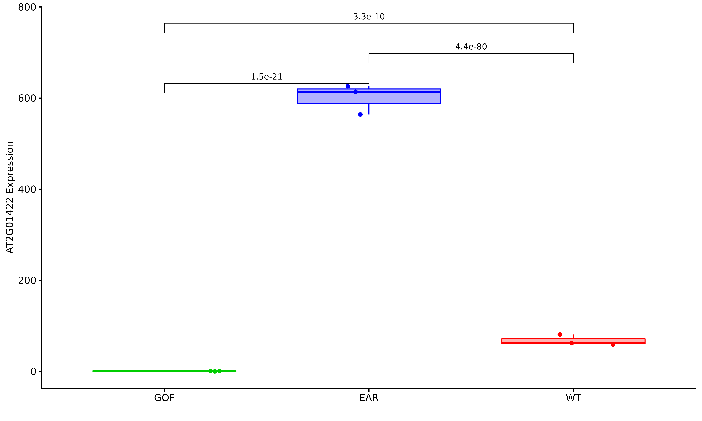
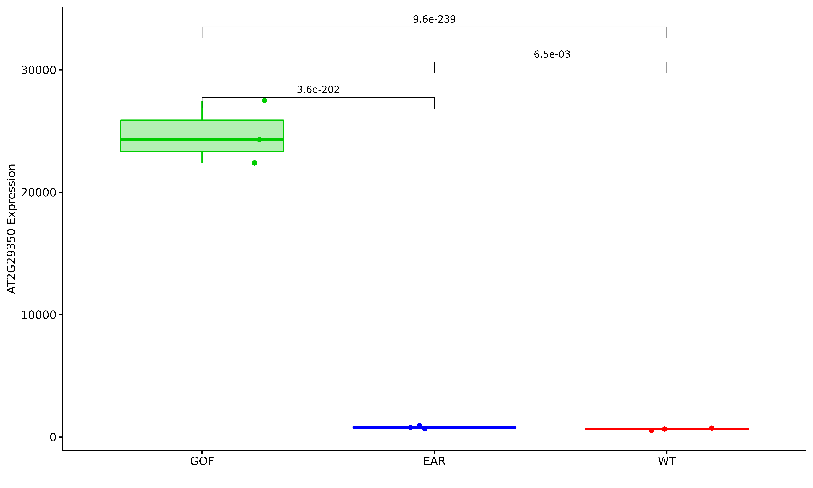
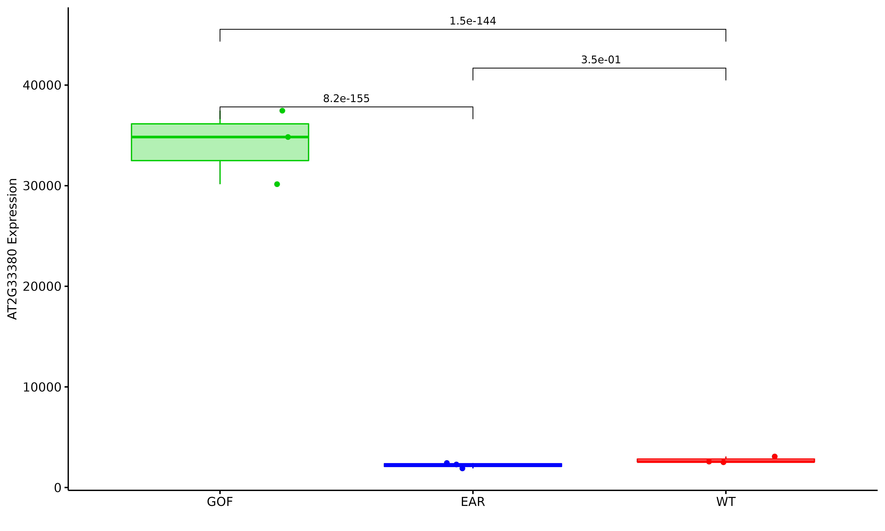
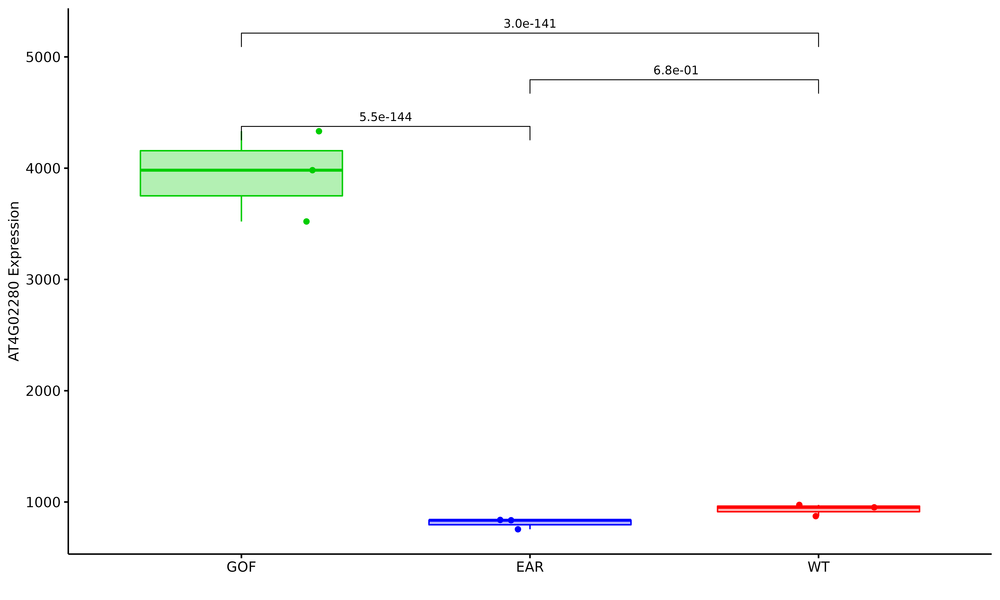
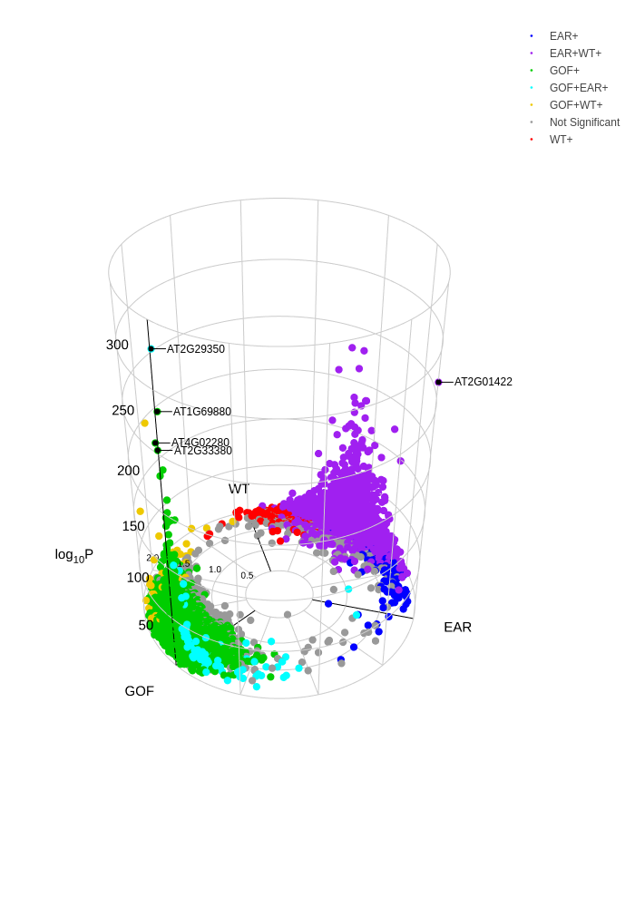

RNAseq三个差异组比较分析

使用volcano3D进行三个差异组间的可视化分析
概述
The volcano3D package enables exploration of probes differentially expressed between three groups. Its main purpose is for the visualisation of differentially expressed genes in a three-dimensional volcano plot. These plots can be converted to interactive visualisations using plotly.
The methodology has been published in Lewis, Myles J., et al. Molecular portraits of early rheumatoid arthritis identify clinical and treatment response phenotypes. Cell reports 28.9 (2019): 2455-2470. (DOI: 10.1016/j.celrep.2019.07.091) with an interactive web tool available at https://peac.hpc.qmul.ac.uk.
分析方法
当前差异分析方法只用DESeq2 和limma 两个模型，其他差异软件也可以使用，建议只对有生物学重复的项目进行分析。当然无重复也是可以做的，可以使用DEGseq进行分析，但是综合组间并不能进行分析，所以总体无生物学重复的项目不考虑做。当前根据DESeq2和limma两个模型，我们整合到了一个脚步中，这个脚本使用如下分析参考：
脚本执行:
|
|
注意事项： group.txt文件中的分组需要大于等于3组
结果可视化
生成的颜色是随机的，根据情况，可以再自行定义
组间不同条件下的二维火山图
只显示显著与不显著的结果

根据结果，显示所有不同组间的差异结果 Alternatively using the polar significance levels

只显示组间，差异上调的基因结果 upregulated group within the standard volcano plot
Radial Plots
以放射性图展示所有不同组间的差异情况 The differential expression can now be visualised on an interactive radar plot using radial_plotly

Boxplots
根据最显著的五个基因，做箱图，比较其在不同组间是否显著差异
    
Three Dimensional Volcano Plots
最后根据以上的结果，做3D图呈现最终的结果图 The final thing we can look at is the 3D volcano plot which projects differential gene expression onto cylindrical coordinates.

可以呈现html的格式
多组差异比较
增对不同的项目，进行多组间差异比较，当前只使用的模型是DESeq2 和 Limma
执行脚本
|
|
参考资料及文献：